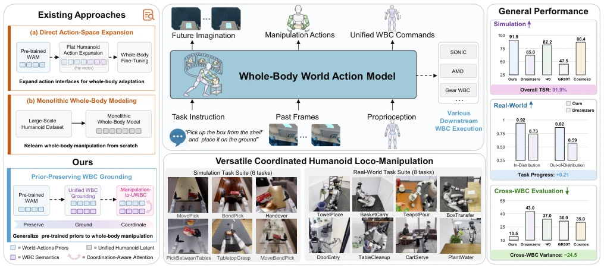
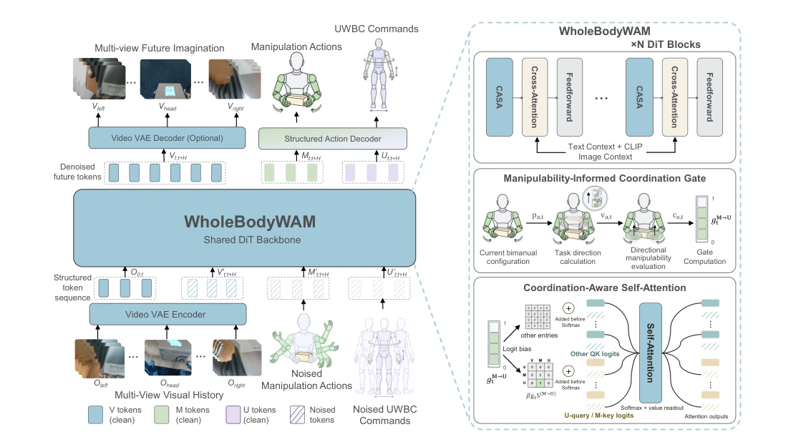
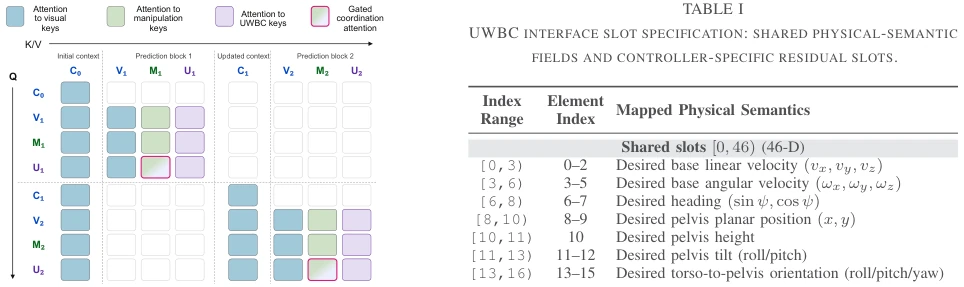
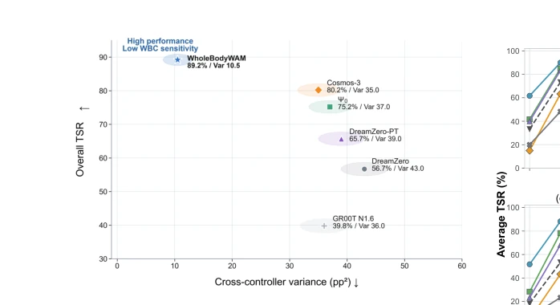
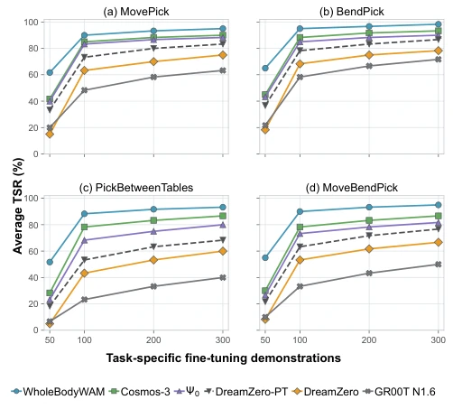
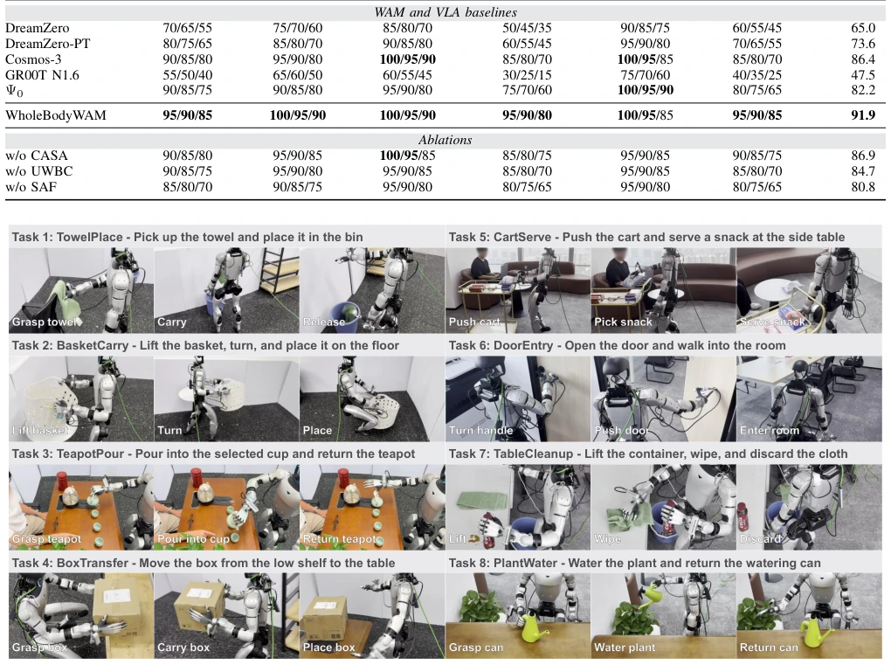
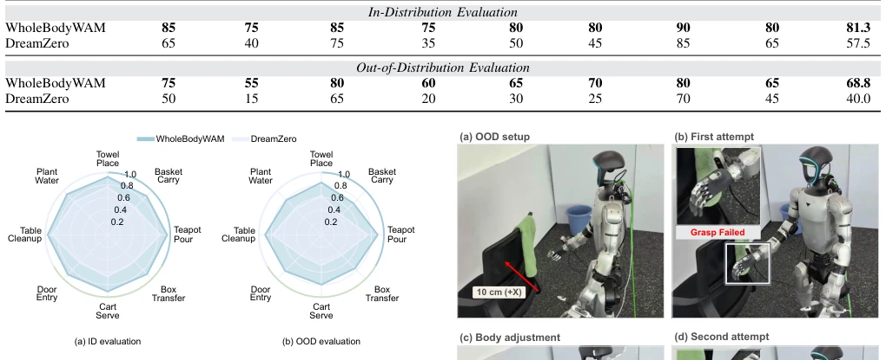
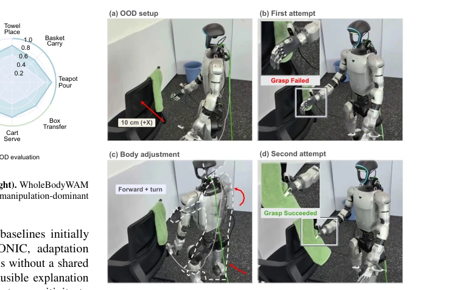

This paper attempts to forcibly embed the "World Action Model" (WAM), originally only capable of playing with blocks on a desktop, into the full body of a humanoid robot, akin to asking a robotic arm that only knows how to tighten screws to suddenly run a marathon while carrying bricks. The authors cleverly avoided training a massive "full-body model" from scratch, instead introducing a "middleman" (UWBC) to translate various disparate controller commands, and added a "Coordinated Perception Attention" (CASA) to remind the robot: "Hey, the hand cannot reach, move the body quickly!" The results are indeed impressive, with the simulation success rate reaching 91.9%, significantly outperforming baselines that merely rely on rote memorization. However, although this "skin change" strategy is effective, it essentially still relies on the "legacy" of the pre-trained model; if the pre-trained data never taught how to walk in mud, this model is likely to fail. Moreover, although the "coordination gate" mechanism sounds sophisticated, will the computation slow down real-time performance? After all, robots are not here to write papers, but to work. Overall, this is a successful "old bottle, new wine," but whether the bottle itself (the pre-trained model) can accommodate all complex full-body actions depends on whether subsequent data can keep pace.
Existing World Action Models (WAMs) are mostly limited to desktop or robotic arm operations, involving less in humanoid robot full-body loco-manipulation. This mainly stems from three difficulties: first is the complexity of full-body coordination, not only moving hands but also coordinating legs and torso; second is that the instruction semantics of different full-body controllers (WBCs) vary greatly, making it difficult for the model to be general; finally, high-quality humanoid full-body operation data is scarce. Existing solutions mainly include two types: one is directly expanding the action space of pre-trained WAMs, but this often leads to the model failing to understand the underlying semantics of different controllers, producing uncoordinated actions; the second is training a massive single full-body model from scratch, which requires massive data and is prone to overfitting specific controllers. As shown by studies such as DiT4DiT [2] and MotionWAM [13], simply expanding action interfaces or relearning mappings cannot effectively solve the generalization problem across controllers. Therefore, how to transfer pre-trained WAM prior knowledge to complex humanoid full-body operations without relearning full-body behaviors is a key problem that needs urgent solving.

Fig. 1. Overview of WholeBodyWAM. Unlike existing approaches that expand action interfaces for whole-body adaptation or learn dedicated humanoid world–action mappings from scratch, WholeBodyWAM preserves and generalizes the world–action priors of pre-trained WAMs to humanoid loco-manipulation through WBC-grounded coordination. Given language, visual history, and proprioception, it jointly predicts future visual dynamics, manipulation intent, and unified whole-body controller (WBC) commands. Evaluations on six simulation and eight real-world tasks demonstrate higher overall task success rates and lower cross-controller performance variance than the evaluated baselines, supporting effective loco-manipulation across diverse tasks and heterogeneous WBCs.
The core idea of WholeBodyWAM is "preserve prior knowledge, unify interface, dynamic coordination". The overall architecture is based on a pre-trained Diffusion Transformer (DiT), inputs include visual history, proprioception, and language instructions, outputs are divided into three streams: future visual dynamics, manipulation actions, and unified whole-body controller commands (UWBC Commands). First, the model retains the operation paths of the pre-trained WAM, ensuring basic operation capabilities are not lost. Second, it innovatively proposes a Unified Whole-Body Controller interface (UWBC), mapping heterogeneous instructions of different WBCs (such as SONIC, AMO, GEAR) into 56-dimensional vectors with unified physical semantics, where 46 dimensions are shared fields (such as base velocity, joint positions), and 10 dimensions are residual fields for specific controller expansion, thereby decoupling the policy from the underlying controller binding. Finally, a Coordinated Perception Self-Attention mechanism (CASA) is designed, by calculating the manipulability of the arm in the task direction, dynamically generating a gate signal; when arm manipulability decreases, it automatically enhances the attention weight from the manipulation stream to the UWBC stream, forcing the model to call full-body motion to assist operation when needed. This design allows the model to intelligently decide whether to "only use hands" or "use hands and feet together" based on the current state.

Fig. 2. Model Architecture. Left: A shared Diffusion Transformer jointly generates future visual dynamics, manipulation actions, and UWBC commands from a structured token sequence conditioned on visual history and task context. Right: CASA adaptively strengthens manipulation-to-UWBC attention based on reductions in task-directional arm manipulability, allowing manipulation intent to guide whole-body coordination.

Fig. 3. Blockwise-Causal Attention with Gated Coordination. Native self-attention visibility is preserved across visual, manipulation, and UWBC streams, while a gated coordination bias selectively enhances manipulation- to-UWBC attention within each prediction block.
Experiments were conducted on the SIMPLE simulation benchmark (6 tasks) and Unitree G1 real robot (8 tasks). Baselines include DreamZero, Cosmos-3, Ψ0, GR00T, etc. Evaluation metrics cover Task Success Rate (TSR), Task Progress (TP), and cross-controller variance. Simulation results show that WholeBodyWAM overall TSR reaches 91.9%, significantly better than DreamZero (65.0%) and Cosmos-3 (86.4%), especially with obvious advantages in tasks involving full-body coordination (such as PickBetweenTables). In real robot experiments, under Out-of-Distribution (OOD) scenarios, its TSR is 68.8%, 28.8 percentage points higher than DreamZero, and the variance across three different WBCs (SONIC, AMO, GEAR) is only 10.5 pp2, showing extremely strong robustness. Ablation studies confirm that removing CASA leads to a 5.0% performance drop in coordination tasks, removing UWBC leads to a 7.2% drop, proving the effectiveness of the unified interface and dynamic coordination mechanism.

Fig. 4. Cross-WBC evaluation. Mean TSR and population variance across SONIC, AMO, and GEAR WBC, with separate fine-tuning for each controller. WholeBodyWAM achieves the highest mean TSR (89.2%) and lowest variance (10.5 pp2).

Fig. 5. Downstream fine-tuning efficiency. We compare downstream fine-tuning efficiency across methods. WholeBodyWAM achieves its largest advantage with few task-specific demonstrations, consistent with effective reuse of pre-trained world–action priors through coordinated WBC grounding.

Fig. 6. Real-world qualitative results. We show WholeBodyWAM performing eight real-world tasks spanning manipulation-dominant and coordination- intensive behaviors. Task instructions appear above each sequence, with frames ordered from left to right. Lower-left labels identify task stages associated with Task Progress (TP) in Fig. 7.

Fig. 7. Task progress under ID (left) and OOD (right). WholeBodyWAM maintains strong progress across eight tasks spanning manipulation-dominant and coordination-intensive behaviors.

Fig. 8. Whole-body coordination generalization. Under a 10 cm displace- ment of the towel support, WholeBodyWAM recovers from a failed grasp through forward repositioning and body rotation.